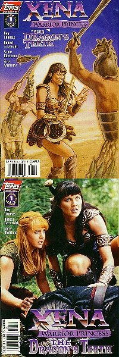
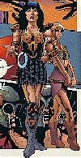
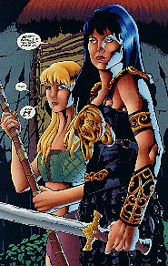
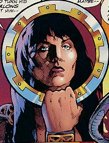

Xena: Warrior Princess/The Dragon's Teeth #1 (of 3)
Title: The Dragon's Teeth: Part One of Three
Date: December 1997
Actual Release: December 24, 1997
Pages: 32 (22 pgs story)
Cover Price: $2.95
Writer: Roy Thomas
Pencils: Robert Teranishi
Inks: Steve Montano
Letters: Ken Lopez
Colors: Digital Chameleon
Editor: Renee Witterstaetter
Painted Cover: Zina Sauders
Photo Cover: Unknown
NOTE: Xena: Warrior Princess created by Robert Tapert and John Schulian
OVERVIEW:
Xena and Gabrielle are in Thebes. Gabrielle recounts the history of the town as they sit in a brawl-filled tavern. Gabrielle suggests they find somewhere quieter to order dinner, but Xena says they'll be fine.
Just then, Gabrielle notices a blind man being led into the place. Xena identifies him as Oedipus. As Oedipus and his escort try to sit down, they are attacked by Prince Adrastus, who mentions that Oedipus has been forbidden to ever set foot in Thebes again.
Xena intervenes.
In the silence that follows (after Xena's knocked out every thug in the place), Oedipus recounts his tale of woe, and explains that he's returned to Thebes because his time to die is near, and he wants to die in the city of his birth.
Prince Adrastus, the adopted son of King Creon, decides to take the matter of Xena and Oedipus into his own hands. He invades the temple of Athena to steal something, killing a guard in the process.
Xena and Gabrielle are told that Hercules wants to meet them by the tomb of Cadmus. Xena smells a trap, but goes anyway. They find Adrastus there, with Dragon's Teeth. he flings them into the ground, and the soldiers spring up to kill Xena and Gabrielle. As Xena and Gabrielle battle the warriors, Adrastus gloats and urges them on. Unfortunately for him, the citizens of Thebes overhear his plans to overthrow his father, and try to kill him. He flees with the Dragon's Teeth warriors.
Except for the one that Xena felled. She decides to try to nurse the warrior back to health, knowing that Thebes will soon have to do battle with Adrastus and six of the supernatural warriors. Oedipus blames himself.
COMMENTS:

I really like the art cover to this one. Many of the art covers are very original and very interesting, while the photo covers tend to be basic stock footage kind of stuff.
This story is kind of disjointed and doesn't flow terribly well. The layouts of the art are more complicated than in previous issues, and possibly adds to the disjointed feeling of the story. I'm hoping that the next issue will flow better.
There is a lot of background given in the opening dialogues of this issue. First we learn about the founding of Thebes by Cadmus, and the origin of the Dragon's Teeth. Then we learn the whole sad tale of Oedipus. Because all the information is important to the story, there seems to be a lot of dialogue.
The art in this issue is incredible. I can't decide whether I like it or hate it. Part of my indecision is based on the complicated layouts I mentioned earlier. The art lends itself to those layouts, but manages to be confusing nonetheless. Two very striking scenes for me were the first appearance of Xena and Gabrielle to Adrastus (one of the better Gabrielle's in the comics so far), and the panel in which Adrastus finds the Teeth, and is mostly in shadow, with the light cast from his hand.
CONCLUSION:
I'm undecided on whether or not I like this book. Buy it and decide for yourself.
Review Date 29 Jan 1998 by Laura Gjovaag
Xena: Warrior Princess/The Dragon's Teeth #2 (of 3)
Title: The Dragon's Teeth: Part Two of Three
Date: January 1998
Actual Release: 28 January 1998
Pages: 32 (22 pgs story) plus pull-out poster
Cover Price: $2.95
Writer: Roy Thomas
Pencils: Robert Teranishi
Inks: Steve Montano
Letters: Ken Lopez
Colors: Digital Chameleon
Editor: Dwight Jon Zimmerman
Painted Cover: Jim Silke
Photo Cover: Unknown
NOTE: Xena: Warrior Princess created by Robert Tapert and John Schulian
OVERVIEW:
Xena and Gabrielle protect Oedipus from King Creon's soldiers. After they cream his troops, Xena allows him to enter. Oedipus explains to King Creon that he has only returned to Thebes to die, and that whatever place buries him will be blessed. Creon agrees to let him stay... in his dungeon. Guards burst in and arrest the whole lot. Xena and Gabrielle allow Antigone, Oedipus and the Dragon's Tooth Warrior Echion to be taken away.
Meanwhile, Adrastus is conquering cities to raise an army to take Thebes. One of the Dragon's Teeth Warriors tells Adrastus a about a secret weapon, in order to hasten to the battle.
Xena checks up on the three prisoners, while Adrastus travels beneath Thebes to awake a centuries-slain dragon. It rouses and starts to destroy the city. Gabrielle saves herself using her staff, and Xena is rescued by Echion, who has escaped from the dungeon. Together they defeat the dragon skeleton, only to be accused of trying to destroy the city be King Creon.

However, Adrastus doesn't let him think that for long, as he arrives riding a sphinx, and his army attacks.
COMMENTS:
The art is simply beautiful, but it doesn't tell the story well. It is very easy to lose the thread of the plot in the graphics, because the panels and layout are so confusing. Visually an incredible book, but it seems a bit thin on the story side.
Echion becomes the latest man to fall in love with Xena. Poor guy.
CONCLUSION:
My recommendation of this book depends on whether you prefer story or art. For the art alone, it's worth the price of admission.
Review Date 18 June 1998 by Laura Gjovaag
Xena: Warrior Princess/The Dragon's Teeth #3 (of 3)
Title: The Dragon's Teeth: Part Three of Three "The Seven Against Thebes"
Date: February 1998
Actual Release: 25 Feb 1998
Pages: 32 (22 pgs story) plus pull-out poster
Cover Price: $2.95
Writer: Roy Thomas
Pencils: Robert Teranishi
Inks: Digital Chameleon
Letters: Ken Lopez
Colors: Digital Chameleon
Editor: Dwight Jon Zimmerman
Painted Cover: Zina Sauders
Photo Cover: Unknown
NOTE: Xena: Warrior Princess created by Robert Tapert and John Schulian
OVERVIEW:
King Creon can't believe his eyes, or his bad luck. That's ok, as he's knocked out of the battle almost immediately by Adrastus, and only saved from death by Xena's quick thinking. Xena then commands the army of Thebes to defend their city.
The attack commences, and Xena throws her Chakram in the sphinx's eye. Some magic is then endowed on it, for she is able to take out five of the warriors in quick succession. Adrastus, trying to capture Oedipus, instead snags Antigone.
The last Dragon's Teeth Warrior kills Echion, and then Xena kills him. She goes off to find Adrastus and Antigone, and is in the nick of time to save Antigone from death. She then kills Adrastus, and arrives in time to watch Oedipus die, at home and free at last of his curse.

COMMENTS:
Because of the many fight scenes, this issue is even more confusing than the first two. Again, the art is the saving grace. Incredible at times, always impressive. If the layouts weren't so odd, and the story so hard to follow, this book would be at the top.
King Creon is represented as a coward who ends up in the mud unable to squeak out an order to his trooops. That's why Xena starts to command them.
The cover has very little to do with what is inside the book.
CONCLUSION:
Again, your enjoyment of this story will depend on how much you like the art, and if you are willing to trace out the story.
Review Date 18 June 1998 by Laura Gjovaag